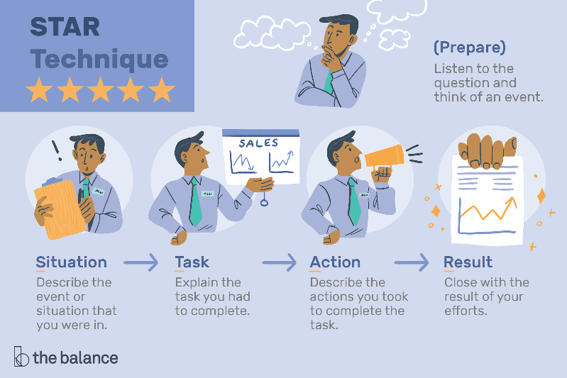

Interview Preparation & Execution
The job interview is one of the most crucial steps in your career search process. It is the organization’s opportunity to determine mutual fit. This guide brings you up to date best practices and step-by-step instructions for mastering the conversation. There are three critical questions, often referred to as “the big three,” that you need to be able to address in preparation:
- Why YOU? Articulating a response to “Tell Me About Yourself”
- WHY THIS POSITION? Understanding the role demands through the job description and online research
- WHY THIS ORGANIZATION? Understanding the organization and the industry
A typical interview process includes several stages:
- Introduction
- Interviewer background
- Discussion (Q&A)
- Questions you want to ask
- The close (timeline & next steps)
- Thank you/follow-up
Feel empowered to ask thoughtful questions that will help you determine if this is somewhere you’d like to work!
- CDO Interview Protocol
- 51 Questions to Ask in an Interview
- Questions to Identify Inclusive Companies
- Use sites like Glassdoor, Chezie and more to see if employee experiences match what they share
Behavioral Interviews
The question, “Tell me about yourself” might be asked to you multiple times throughout an interview process. When you meet with different people in the organization, they will want to know your story! The best way to feel confident about answering this question is to prepare for a passionate, concise answer. Follow these guidelines to craft your answer to this question:
- Keep it professional - Provide a brief overview of past work and educational experiences that led you to where you are now.
- Convey story of passion for the field/industry/org!
- Keep it Relevant - Provide a few relevant points that directly tie to the position and how you are qualified for it.
- Specific past work experience, specific skills and strengths that would be valuable to the position/organization.
- Keep it Concise - No more than 1 to 2 minutes!
To prepare for behavioral interview questions – those that ask about past experiences to predict future behavior – aim to have 3-4 stories ready. These stories should highlight your skills, accomplishments, and how you've handled challenges.
MSI Example:I am earning a [degree title] from the University of Michigan School of Information specializing in [area]. I am passionate about [specific area/interest] and have [name one or two projects you’ve worked on in that area]. I was excited to see that you had positions open because [Explain why you are passionate about their company/specific position and mention one or two related projects/accomplishments].
STAR model: The STAR model is a framework for answering questions that start like this: "Describe the most difficult/interesting/rewarding..." or "Give me an example where you..." with a short story. As we've noted previously, STAR stands for situation, task, action, and result:
Technical, Design, & Case Interviews
Technical interviewing can be a blend of walking an interviewer through a technical project, answering questions about the applications of various methods, and a discussion of innovations in the industry for which you are applying. It’s important to highlight your various skills as you answer questions, both in terms of technical capabilities and critical thinking.
Guidelines:
- Keep your answers concise - No more than 2-3 minutes! You risk losing your interviewer’s interest otherwise.
- Review the basics - Interviewers may quiz you on very basic materials, such as asking you to explain hypothesis testing or when to use different machine learning methods.
- Review your work - Prepare to talk about working on a technical project on a team and what your role was. Use “I” rather than “we” when discussing your part of the project. Make sure you understand what exactly your code does and practice explaining it eloquently.
- There’s no right answer - You don’t need to know the exact answer to a question that your interviewer asks. They want to know about how you think through difficult problems to make a decision. This means taking pauses before rushing into your answer, and potentially explaining your thought process. Speaking of which, interviewers may ask questions about various programming languages, methods or tools that you know. It’s preferred to be honest about what you are and are not familiar with, and how you might accomplish the same end result using something you’re more familiar with. Again, your thought process is the most valuable aspect of technical interviews.